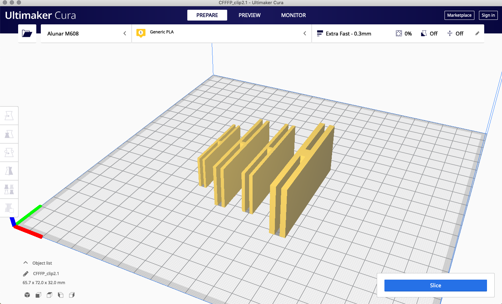

Gabrielle's Assignment 3!
Part I: Clips




Trying out different sizes of clips in the slicer
Clips with dimensions too small to see
A few fails! For the first one, I forgot to use the BooleanUnion command in Rhino,
and the second had an undercut too dramatic for the printer to handle.
Ugly but sturdy!
Part II: Nested bowls
Bowls with dimensions in mm
Grasshopper definition
Grasshopper definition of the bowls
Fugly bowls due to the unaligned printer but! we fixed the printer
this weekend (as of May 3)
Look at it go!